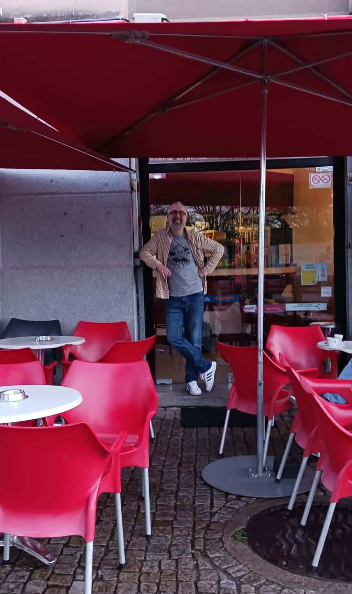
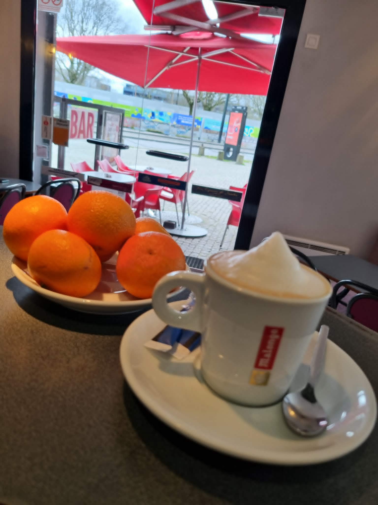
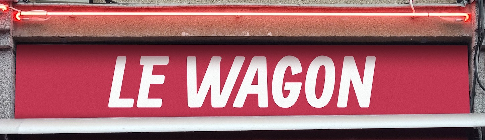
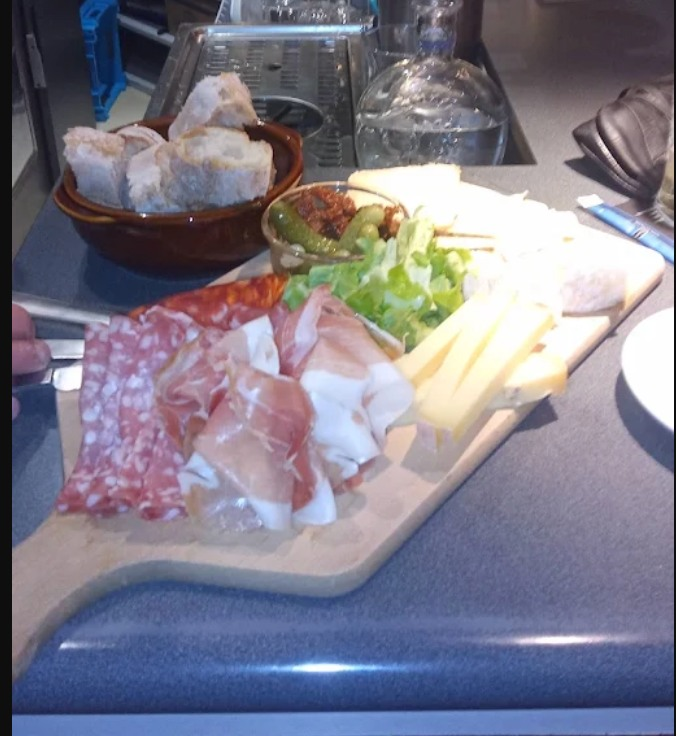
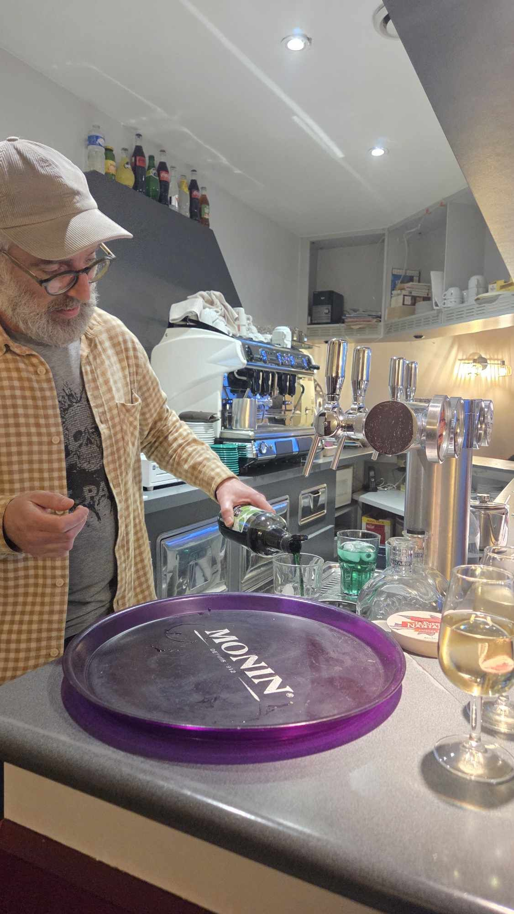
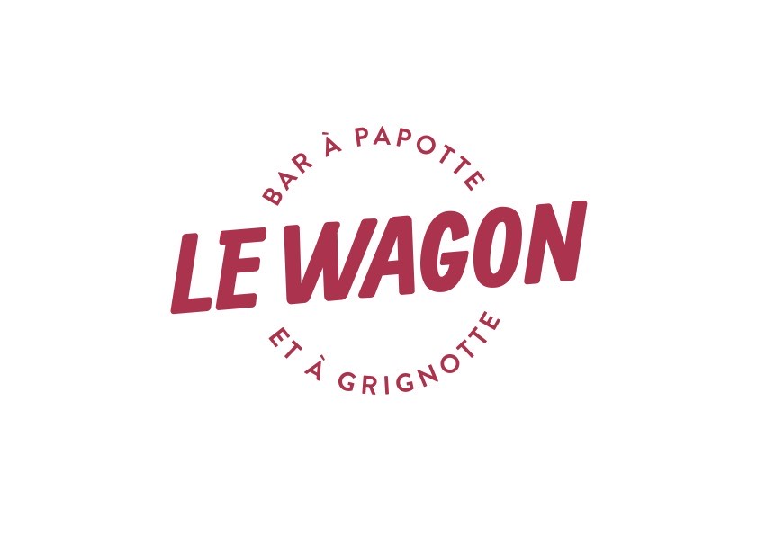

Nos horaires
- LundiFermé
- Mardi8h – 18h
- Mercredi8h – 18h
- Jeudi8h – 00h
- Vendredi8h – 00h
- Samedi8h45 – 16h
- DimancheFermé
La carte
François

J'ai voulu créer un lieu où l'on se sent chez soi, où chaque client repart avec le sourire et l'envie de revenir.
Passionné par le contact humain et les bonnes choses, François a ouvert Le Wagon pour partager sa vision d'un bar chaleureux et authentique. Au comptoir ou en terrasse face au quai de la Fosse, il vous accueille avec le sourire et une attention particulière. Ici, on prend le temps de papoter, de grignoter et de profiter de l'instant.
L'ambiance





Ce qu'ils en disent
« Amazing place, can totally recommend it, super nice staff! »
« Un nouveau super petit bar Nantais, tenu par un patron adorable, y aller c'est l'adopter ! Vivement le p'tit retour de beau temps pour la terrasse. »
« Un bar très sympa face à la médiathèque et petite Hollande pour se poser en terrasse au retour du marché ! Les planches sont top. »
Questions fréquentes
Où se trouve Le Wagon à Nantes ?
Le Wagon est situé au 22 quai de la Fosse, en plein centre-ville de Nantes (44000). Le bar dispose d'une terrasse donnant sur le quai.
Quels sont les horaires d'ouverture ?
Le Wagon est ouvert du mardi au samedi. Mardi et mercredi de 8h à 18h, jeudi et vendredi de 8h à minuit, et samedi de 8h45 à 16h. Fermé le dimanche et le lundi.
Qui est le patron du Wagon ?
François est le propriétaire et gérant du Wagon. Il vous accueille avec le sourire dans son bar à papote et à grignote.
Que peut-on manger et boire au Wagon ?
Le Wagon propose des cafés de qualité, boissons chaudes, bières artisanales, vins, cocktails maison et petites gourmandises à grignoter dans une ambiance conviviale.
Nous trouver
Le Wagon
22 quai de la Fosse
44000 Nantes
Tramway Ligne 1 — Arrêt Chantiers Navals
Bus C5 — Quai de la Fosse
Mar-Mer : 8h-18h
Jeu-Ven : 8h-00h
Sam : 8h45-16h